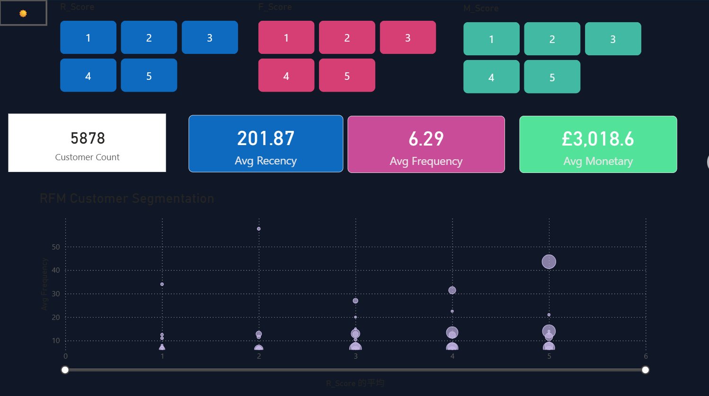

DATA ANALYTICS · CUSTOMER ANALYTICS
RFM Customer Segmentation Analysis
Segmenting customers by recency, frequency, and monetary value to support targeted marketing and customer retention strategies.

01 — OVERVIEW
Understand customer behavior.
This Power BI dashboard explores customer behavior through three RFM dimensions: recency (time since last purchase), frequency (purchase frequency), and monetary value (spending). R, F and M score controls support interactive exploration.
02 — DASHBOARD
Explore patterns across customer segments.
The shared screenshot displays customer count, average recency, average frequency, average monetary value, and a scatter chart for comparing customer groups. KPI values may change as report filters change.
03 — BUSINESS APPLICATION
From segmentation to decisions.
RFM analysis can help teams explore different customer behaviors and formulate hypotheses for retention and targeted marketing. Segment definitions, thresholds, and business recommendations should be validated against the underlying data before deployment.
04 — NEXT STEPS
Validate and extend the analysis.
Future documentation can describe the dataset, score thresholds, DAX calculations, segment sizes, and evidence-based recommendations after these details are confirmed.